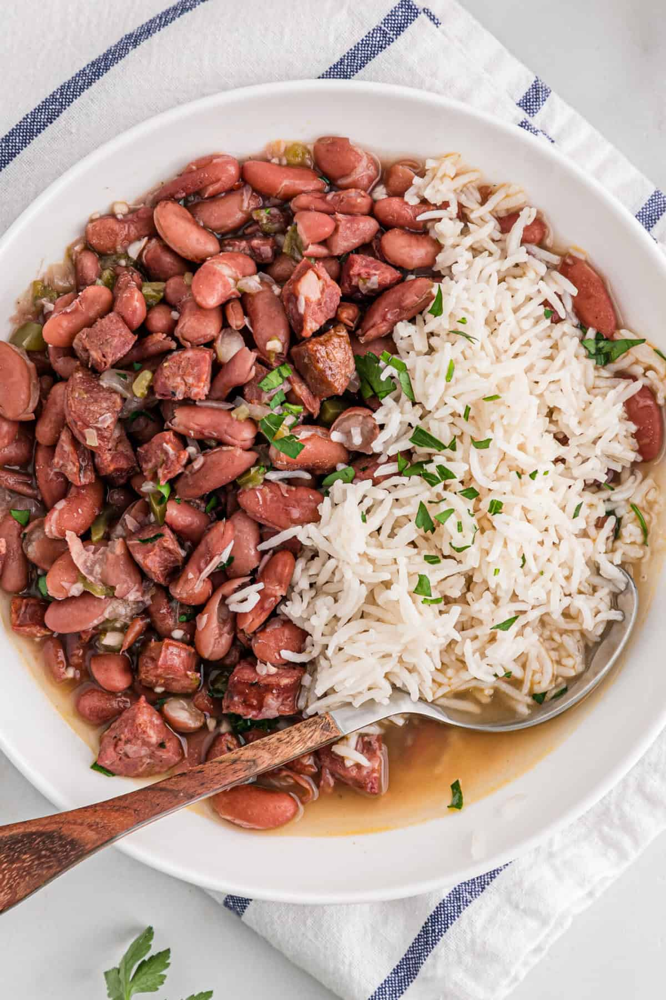

Beans N' Rice

Black beans with rice
Black beans and rice make a great 30-minute vegetarian meal that's filling, delicious, and cheap!
Great as a side dish or in a burrito bowl, too. Often choosed as the burrito filling.
This recipe is from The WEBB Cooks by Robyn Webb, courtesy of the American Diabetes Association.
Ingredients
- 1 teaspoon olive oil
Often choosed as the burrito filling.
- 1 onion, chopped
- 2 cloves garlic, minced
- 3/4 cup uncooked white rice
- 1 and 1/2 cups vegetable broth
- 3 and 1/2 cups canned balck beans, drained
- 1 teaspoon ground cumin
- 1/4 teaspoon cayenne pepper
Steps
- Gather all ingredients.
- Heat oil in a saucepan over medium-high heat. Add onion and garlic; cook and stir until onion has softened, about 4 minutes.
- Stir in rice to coat; cook and stir for 2 minutes.
- Add vegetable broth and bring to a boil. Cover, reduce to a simmer, and cook until liquid is absorbed, about 20 minutes.
- Stir in beans, cumin, and cayenne; cook until beans are warmed through.
- Serve and enjoy!
Home Page